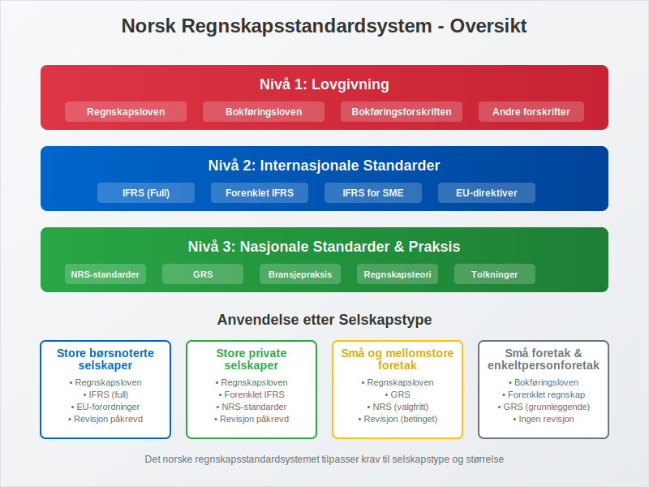
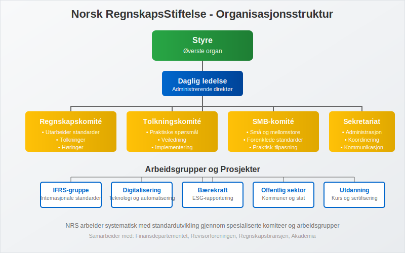
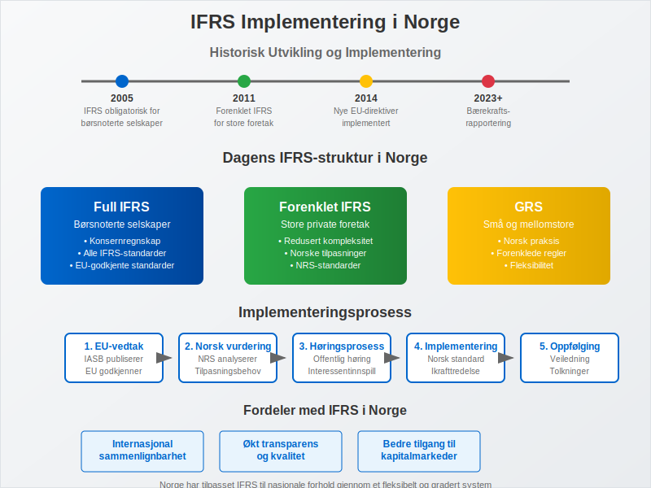
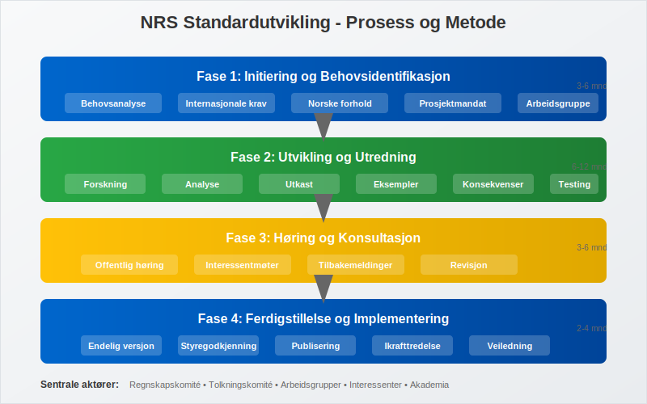
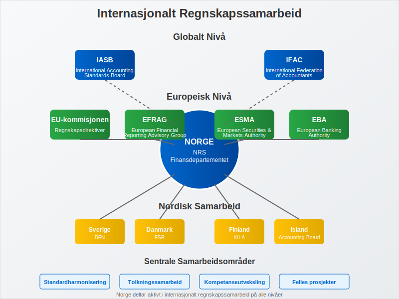
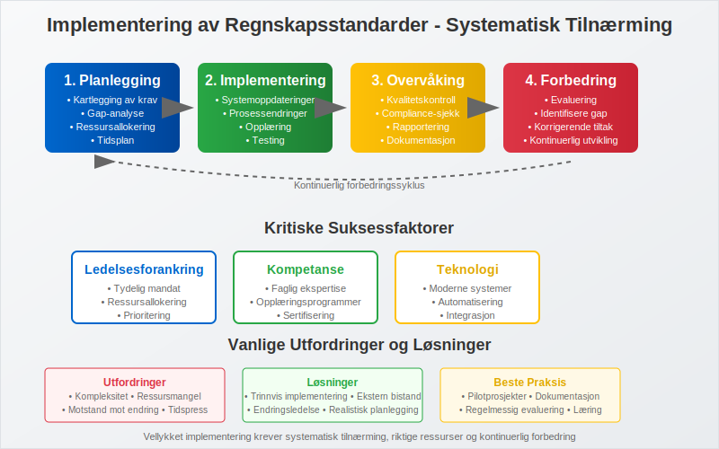

Norske regnskapsstandarder utgjør det juridiske og tekniske rammeverket som regulerer finansiell rapportering i Norge. Dette omfattende systemet sikrer konsistens, sammenlignbarhet og pålitelighet i regnskap på tvers av ulike selskapstyper og bransjer. Forståelse av disse standardene er avgjørende for alle som arbeider med bokføring og finansiell rapportering i Norge.
Det norske regnskapsstandardsystemet bygger på prinsippene om god regnskapsskikk, som danner grunnlaget for kvalitetsregnskap og etisk regnskapsføring i norsk næringsliv.

Seksjon 1: Oversikt over det Norske Regnskapsstandardsystemet
Det norske regnskapsstandardsystemet er hierarkisk oppbygd med flere nivåer av standarder og regelverk som sammen sikrer omfattende dekning av alle regnskapsmessige forhold.
1.1 Hierarkiet i Norske Regnskapsstandarder
Standardhierarkiet i Norge følger en klar struktur som sikrer konsistent anvendelse:
| Nivå | Standard/Regelverk | Anvendelsesområde | Juridisk Status |
|---|---|---|---|
| 1 | Regnskapsloven | Alle regnskapspliktige | Lov |
| 2 | Bokføringsloven | Alle bokføringspliktige | Lov |
| 3 | Bokføringsforskriften | Alle bokføringspliktige | Forskrift |
| 4 | IFRS | Børsnoterte selskaper | EU-forordning |
| 5 | Forenklet IFRS | Store foretak | NRS-standard |
| 6 | God regnskapsskikk (GRS) | Små og mellomstore foretak | Sedvanerett |
1.2 Norsk RegnskapsStiftelse (NRS)
Norsk RegnskapsStiftelse er den sentrale institusjonen for standardsetting i Norge. Stiftelsen ble etablert i 1989 som en privat, uavhengig organisasjon med mandat til å utvikle norske regnskapsstandarder.

NRS har følgende hovedoppgaver:
- Standardutvikling: Utarbeide norske regnskapsstandarder (NRS)
- Tolkningsarbeid: Gi veiledning om anvendelse av standarder
- Internasjonalt samarbeid: Bidra til utvikling av internasjonale standarder
- Utdanning og informasjon: Spre kunnskap om regnskapsstandarder
Seksjon 2: IFRS i Norge
International Financial Reporting Standards (IFRS) har en sentral rolle i det norske regnskapsstandardsystemet, særlig for større selskaper og børsnoterte foretak.
2.1 IFRS for Børsnoterte Selskaper
Siden 2005 har alle børsnoterte selskaper i Norge vært pålagt å anvende IFRS i sitt konsernregnskap. Dette sikrer:
- Internasjonal sammenlignbarhet av finansiell informasjon
- Økt transparens overfor internasjonale investorer
- Harmonisering med europeiske regnskapsstandarder
- Forbedret kapitalmarkedstilgang for norske selskaper
2.2 Forenklet IFRS for Store Foretak
For store foretak som ikke er børsnoterte, har NRS utviklet Forenklet IFRS - en tilpasset versjon av IFRS som:
- Reduserer kompleksiteten sammenlignet med full IFRS
- Beholder de viktigste prinsippene fra IFRS
- Tilpasses norske forhold og behov
- Gir fleksibilitet for nasjonale tilpasninger

Seksjon 3: God Regnskapsskikk (GRS)
God regnskapsskikk er det grunnleggende prinsippet som gjelder for alle regnskapspliktige i Norge. GRS utvikles gjennom:
3.1 Kilder til God Regnskapsskikk
- Regnskapslovgivning: Regnskapsloven og tilhørende forskrifter
- Regnskapsstandarder: NRS-standarder og IFRS
- Regnskapspraksis: Etablert praksis i næringslivet
- Regnskapsteori: Akademisk forskning og utvikling
- Internasjonale standarder: Påvirkning fra internasjonale regnskapsstandarder
3.2 Grunnleggende Prinsipper i GRS
God regnskapsskikk bygger på flere fundamentale prinsipper:
- Forsiktighetsregelen: Ikke overvurdere eiendeler eller undervurdere gjeld
- Sammenlignbarhet: Konsistent anvendelse over tid og mellom foretak
- Relevans: Informasjonen må være nyttig for brukerne
- Pålitelighet: Informasjonen må være korrekt og etterprøvbar
- Forståelighet: Presentasjonen må være klar og oversiktlig
Seksjon 4: NRS-Standarder
Norsk RegnskapsStiftelse har utviklet en rekke spesifikke standarder som utdyper og presiserer god regnskapsskikk for ulike områder.
4.1 Oversikt over Viktige NRS-Standarder
| Standard | Tittel | Hovedinnhold |
|---|---|---|
| NRS 1 | Presentasjon av årsregnskap | Grunnleggende presentasjonsprinsipper |
| NRS 2 | Kontantstrømoppstilling | Utarbeidelse av kontantstrømoppstilling |
| NRS 6 | Pensjonskostnader | Regnskapsføring av pensjonsforpliktelser |
| NRS 8 | Goodwill | Behandling av goodwill og andre immaterielle eiendeler |
| NRS 13 | Leieforhold | Regnskapsføring av leieavtaler |
| NRS 15A | Foretakssammenslutninger | Virksomhetsoppkjøp og fusjoner |
| NRS 19 | Skatt | Regnskapsføring av skattekostnad og utsatt skatt |
4.2 Implementering og Anvendelse
NRS-standardene implementeres gjennom:
- Obligatorisk anvendelse: For foretak som faller inn under standardens virkeområde
- Overgangsbestemmelser: Spesifikke regler for første gangs anvendelse
- Veiledning: Tolkningsuttalelser og praktiske eksempler
- Oppdateringer: Regelmessig revisjon og oppdatering av standarder

Seksjon 5: Særlige Forhold for Ulike Selskapstyper
Det norske regnskapsstandardsystemet tar hensyn til ulike selskapstypers behov og kompleksitet.
5.1 Aksjeselskaper (AS)
Aksjeselskaper må følge:
- Regnskapsloven i sin helhet
- Relevante NRS-standarder
- Særlige krav til aksjekapital og egenkapital
- Krav til ekstern revisjon (for store AS)
5.2 Enkeltpersonforetak (ENK)
Enkeltpersonforetak har forenklete krav:
- Bokføringsplikt etter bokføringsloven
- Forenklet regnskapsføring
- Mindre omfattende rapporteringskrav
- Mulighet for kontantregnskap ved lav omsetning
5.3 Foreninger og Stiftelser
Foreninger og stiftelser har spesielle regler:
- Tilpassede regnskapsprinsipper for ideelle organisasjoner
- Særlige regler for kontingenter og medlemsavgifter
- Krav til åpenhet og transparens
- Spesielle regler for offentlige tilskudd
Seksjon 6: Internasjonalt Samarbeid og Harmonisering
Norge deltar aktivt i internasjonalt regnskapssamarbeid for å sikre harmonisering og kvalitet i regnskapsstandarder.
6.1 Europeisk Samarbeid
- EU-direktiver: Implementering av regnskapsdirektiver
- EFRAG: Deltakelse i European Financial Reporting Advisory Group
- Nordisk samarbeid: Koordinering med andre nordiske land
- Felles tolkninger: Samarbeid om praktisk anvendelse
6.2 Globalt Samarbeid
- IASB: Bidrag til utvikling av IFRS
- IFAC: Deltakelse i International Federation of Accountants
- Faglig utveksling: Deling av erfaringer og beste praksis
- Standardharmonisering: Arbeid for global konvergens

Seksjon 7: Fremtidige Utviklingstrender
Det norske regnskapsstandardsystemet utvikler seg kontinuerlig for å møte nye utfordringer og behov.
7.1 Digitalisering og Teknologi
- API-integrasjon: Automatisering av regnskapsføring
- Kunstig intelligens: Automatisk kategorisering og kontroll
- Blockchain: Sikker og transparent regnskapsføring
- Sanntidsrapportering: Kontinuerlig oppdatering av finansiell informasjon
7.2 Bærekraft og ESG-Rapportering
- ESG-standarder: Environmental, Social og Governance rapportering
- EU-taksonomien: Klassifisering av bærekraftige aktiviteter
- CSRD: Corporate Sustainability Reporting Directive
- Integrert rapportering: Kombinasjon av finansiell og ikke-finansiell informasjon
7.3 Regulatoriske Endringer
- Forenkling: Reduksjon av administrativ byrde for små foretak
- Harmonisering: Ytterligere tilnærming til internasjonale standarder
- Fleksibilitet: Tilpasning til nye forretningsmodeller
- Kvalitetssikring: Styrket kontroll og overvåking
Seksjon 8: Praktisk Implementering og Compliance
Effektiv implementering av norske regnskapsstandarder krever systematisk tilnærming og kontinuerlig oppfølging.
8.1 Implementeringsprosess
For å sikre korrekt anvendelse av norske regnskapsstandarder bør foretak følge en strukturert prosess:
- Kartlegging: Identifisere hvilke standarder som gjelder
- Gap-analyse: Sammenligne eksisterende praksis med krav
- Implementeringsplan: Utvikle tidsplan og ressursallokering
- Opplæring: Sikre kompetanse hos regnskapspersonell
- Testing: Pilotprosjekter før full implementering
- Dokumentasjon: Etablere internkontroll og prosedyrer
8.2 Kvalitetssikring og Kontroll
Kontinuerlig kvalitetssikring er avgjørende for å opprettholde standardkomplians:
- Interne kontroller: Systematiske kontrollrutiner
- Ekstern revisjon: Uavhengig verifikasjon av regnskapet
- Benchmarking: Sammenligning med bransjestandard
- Kontinuerlig forbedring: Regelmessig evaluering og oppdatering

Seksjon 9: Utfordringer og Løsninger
Implementering av norske regnskapsstandarder kan medføre ulike utfordringer som krever målrettede løsninger.
9.1 Vanlige Utfordringer
- Kompleksitet: Mange og detaljerte standarder
- Ressurskrav: Behov for spesialisert kompetanse
- Teknologiske krav: Behov for oppdaterte systemer
- Endringshåndtering: Tilpasning til nye standarder
- Kostnader: Implementerings- og driftskostnader
9.2 Anbefalte Løsninger
- Kompetanseutvikling: Investering i opplæring og sertifisering
- Teknologioppgradering: Moderne ERP-systemer og regnskapsverktøy
- Ekstern bistand: Bruk av spesialiserte rådgivere
- Gradvis implementering: Trinnvis innføring av nye standarder
- Samarbeid: Erfaringsdeling med andre foretak
Konklusjon
Det norske regnskapsstandardsystemet representerer et omfattende og sofistikert rammeverk som sikrer høy kvalitet i finansiell rapportering. Gjennom kombinasjonen av internasjonale standarder som IFRS, nasjonale tilpasninger gjennom NRS-standarder, og det grunnleggende prinsippet om god regnskapsskikk, har Norge etablert et regnskapssystem som balanserer internasjonale krav med nasjonale behov.
For regnskapsførere, revisorer og bedriftsledere er forståelse av dette systemet avgjørende for å sikre korrekt og lovlig regnskapsføring. Det kontinuerlige utviklingsarbeidet, ledet av Norsk RegnskapsStiftelse og i samarbeid med internasjonale organer, sikrer at norske regnskapsstandarder forblir relevante og oppdaterte i et stadig skiftende forretningslandskap.
Fremtiden vil bringe nye utfordringer knyttet til digitalisering, bærekraftsrapportering og globalisering, men det solide fundamentet i det norske regnskapsstandardsystemet gir en god plattform for å møte disse utfordringene på en konstruktiv måte.